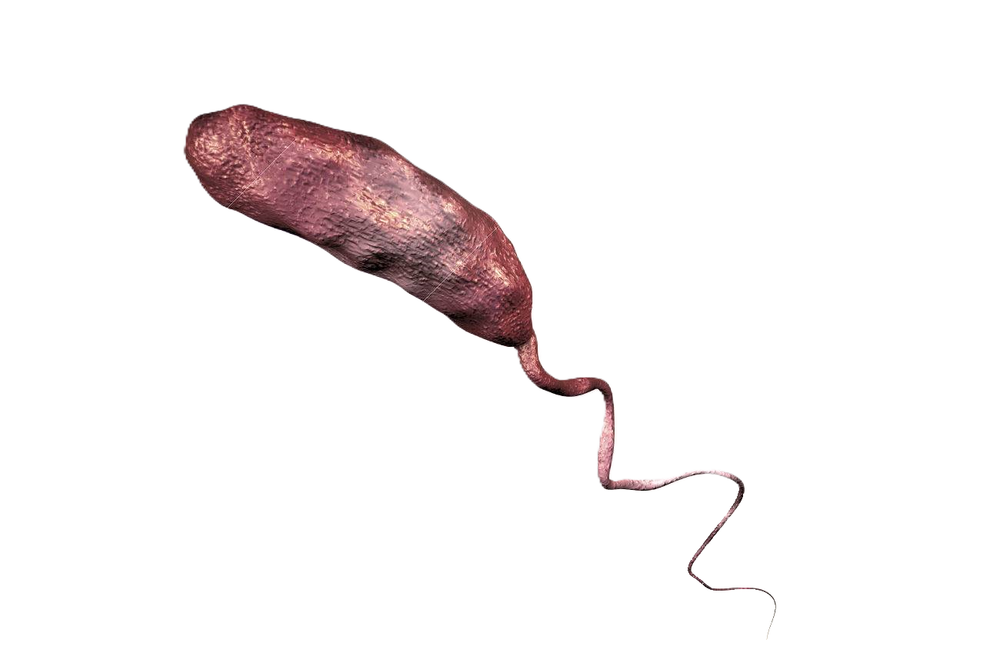
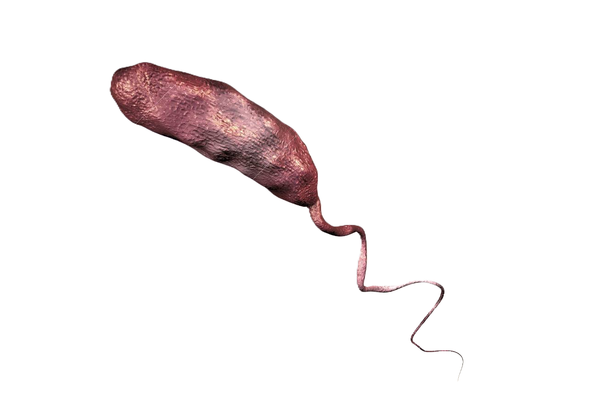

Descripción microbiológica
Vibrio cholerae es un bacilo gramnegativo curvado (forma de "coma") de 1.5-3 µm de longitud, móvil gracias a un flagelo polar único. No forma esporas y presenta fimbrias tipo IV para adhesión. Su pared celular contiene LPS (endotoxina) y una cápsula de polisacáridos en algunas cepas. Es anaerobio facultativo, oxidasa-positivo y fermenta glucosa sin gas. Las colonias en agar TCBS (selectivo) son amarillas (fermentación de sacarosa), convexas y de 2-3 mm a 37°C. Los serogrupos O1 y O139 son responsables del cólera epidémico.
Características distintivas
- Tinción: Gram-negativo, curvado, flagelado ("movimiento en enjambre").
- Metabolismo: Crece en medios alcalinos (pH 8.5-9.5) y agua salobre.
- Resistencias: Sensible a ácidos gástricos (dosis infectante alta: 10⁸-10¹⁰ UFC).
- Factores de virulencia: Toxina colérica (CTX), TCP (pili de colonización), regulación por "quorum sensing".
Ecología y transmisión
Habita en ambientes acuáticos (estuarios, manglares) asociado a zooplancton y fitoplancton. Sobrevive meses en aguas salobres (0.5-3% salinidad) y se multiplica en temperaturas >20°C. La transmisión es fecal-oral mediante agua o alimentos contaminados (mariscos crudos, vegetales regados con aguas negras). Brotes se asocian a desastres naturales (inundaciones), hacinamiento y falta de saneamiento básico. No hay reservorios animales significativos.
Factores ambientales
- Supervivencia: Hasta 15 días en agua dulce, años en aguas salobres a 10°C.
- pH óptimo: 8.5 (alcalino), muere rápidamente en pH <6 (ej. jugo gástrico).
- Biocidas: Sensible a cloro (0.5 ppm), yodo, ebullición (1 minuto).
Mecanismos de patogenicidad
La diarrea acuosa masiva resulta de:
| Factor | Mecanismo | Efecto clínico |
|---|---|---|
| Toxina colérica (CTX) | Activa adenilato ciclasa (subunidad A) | Secreción de Cl⁻/HCO₃⁻ y agua |
| Toxina co-regulated pilus (TCP) | Adhesión a enterocitos | Colonización intestinal |
| Hemaglutinina/Proteasa | Degrada mucina | Facilita penetración |
Enfermedades clínicas
- Cólera típico: Diarrea acuosa profusa ("agua de arroz"), vómitos, deshidratación severa (pérdida de 1 L/hora).
- Formas graves: "Cólera gravis" (hipovolemia, acidosis, fallo renal).
- Portadores asintomáticos: 75% de infectados en zonas endémicas.
- Infecciones extraintestinales: Raras (celulitis, bacteriemia en inmunodeprimidos).
Diagnóstico y tratamiento
Métodos diagnósticos incluyen:
- Microscopía (movilidad en campo oscuro o tinción de Gram).
- Cultivo en TCBS/agar sangre alcalino + pruebas bioquímicas (oxidasa, fermentación).
- PCR para genes ctxA (toxina) y tcpA (pili).
Manejo terapéutico:
- Rehidratación: Soluciones de SRO (OMS) o IV (Ringer lactato) en casos graves.
- Antibióticos: Doxiciclina (adultos), azitromicina (niños), reduce duración y excreción.
- Zinc: En niños (reduce recurrencias).
Prevención y control
- Agua segura: Cloración, filtrado o ebullición.
- Vacunas: Orales (Dukoral®, Shanchol™) con eficacia del 60-85% por 2 años.
- Vigilancia: Notificación obligatoria, monitoreo de fuentes hídricas.
Datos epidemiológicos
- 7 pandemias registradas (actual: El Tor, O1 desde 1961; O139 emergió en 1992).
- 1.3-4 millones de casos/año mundialmente (21,000-143,000 muertes, OMS).
- Endémico en 50 países (África, Asia, Haití); brotes asociados a conflictos (Yemen, 2017: >1 millón de casos).